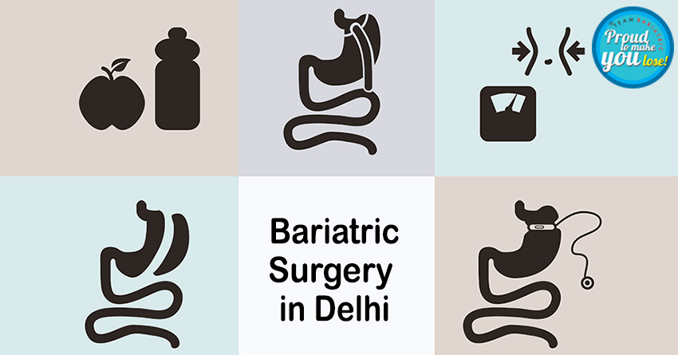

The Rise of Bariatric Surgery in Delhi: A Comprehensive Solution for Obesity and Type 2 Diabetes
Increasing Prevalence of Obesity
There is a dramatic increase in prevalence of obesity. The traditional approaches like dietary and lifestyle modification, physical activity, and pharmacotherapy fail to facilitate weight loss and treat obesity. So, bariatric surgery is the most sustainable treatment option. Bariatric surgery also promises improvement in obesity-related comorbidities like type 2 diabetes, hypertension, dyslipidemia, arthritis, etc. so, the term bariatric surgery is now replaced with bariatric and metabolic surgery. These days metabolic surgery for diabetes has emerged as a proven tool for the resolution or control of type 2 diabetes. This weight loss treatment in Delhi is being done only at specialized centers, by adequately trained and expert surgeons. Thus it gives a permanent cure to this traditionally regarded as a progressive, unrelenting disease called type 2 diabetes.
Bariatric Surgery in Delhi
In the last few years, there has been an increase in weight loss treatment in Delhi. Many centers are currently performing bariatric surgery. Patients from every corner of India prefer to come to Delhi for bariatric surgery owing to the availability of the best medical facilities, trained and experienced bariatric surgeons, and specialized paramedic staff. Even International patients prefer Delhi, India for bariatric surgery.
Sleeve gastrectomy and roux-en-Y gastric bypass are the most commonly performed weight loss procedures. Metabolic surgery for type 2 diabetes targets patients with uncontrolled diabetes who are currently on oral drugs and insulin. Scientific literature reports that bariatric and metabolic surgery results in weight loss, improvement/ normalization of blood sugar levels, reduction/ withdrawal of diabetes medications, and decrease in cardiovascular disease risk factors. It is a simple procedure and the patients may be able to leave the hospital in one day or even the same day in selected cases.
Comparing Surgical Procedures
In patients with reflux disease and type 2 diabetes, the results of sleeve gastrectomy may be inferior to the roux-en-Y gastric bypass but the excess weight loss of both the procedures may be comparable in a select subgroup of patients.
Nutritional Considerations Post-Surgery
Nutritional deficiencies are present in obese patients as consumption of a high-energy diet compromises on protein, vitamin, and mineral intake. As Sleeve gastrectomy and roux-en-Y gastric bypass involve removal or bypassing of some parts of the stomach and /or small intestine, so, macronutrient (protein) and micronutrient deficiencies (calcium, iron, B12, vitamin D, folate, etc.) are very likely to occur post-operatively in the patients. Nutritional assessment remains the key component pre-operatively and post-operatively to identify, prevent, and treat nutritional deficiencies at an early stage. Nutritional assessment involves taking physical measurements of the body (height, weight, etc.), analyzing blood and urine samples, identifying deficiency signs and symptoms, and performing a comprehensive dietary assessment.
Ensuring Surgical Success
Consuming a well-balanced energy-restricted diet with vitamin and mineral supplements and timely follow-up with the bariatric team promises success of the surgery.
Back to Blog